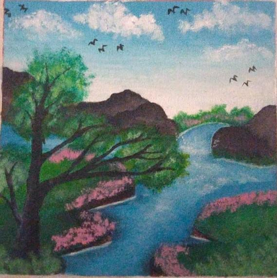
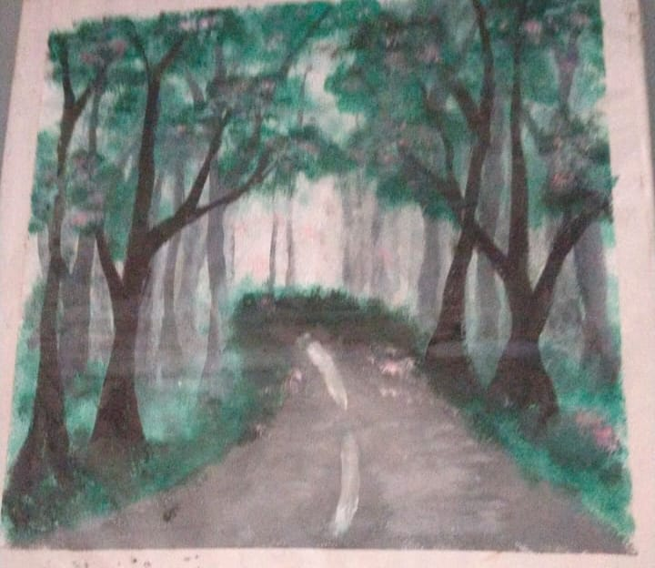

Galeri Lukisan



Seniman, Mahasiswi, dan Pecinta Olahraga
Halo! Aku Dina Anggini, kelahiran tahun 2007 dan saat ini sedang menjalani kuliah semester 2 di Universitas Tazkia, Sentul. Aku memiliki hobi olahraga—semua hal tentang olahraga sangat aku sukai. Selain itu, aku juga senang melukis dan aktif dalam berbagai kegiatan yang mengembangkan kemampuan diri.